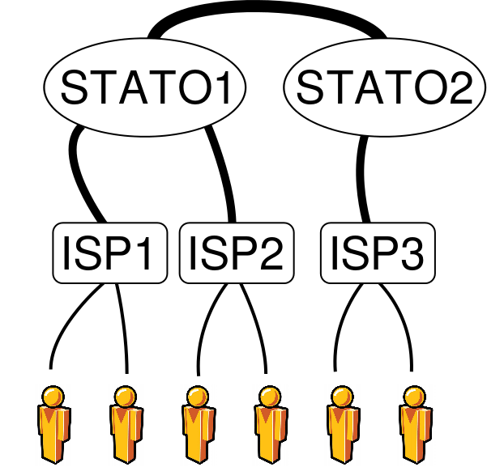
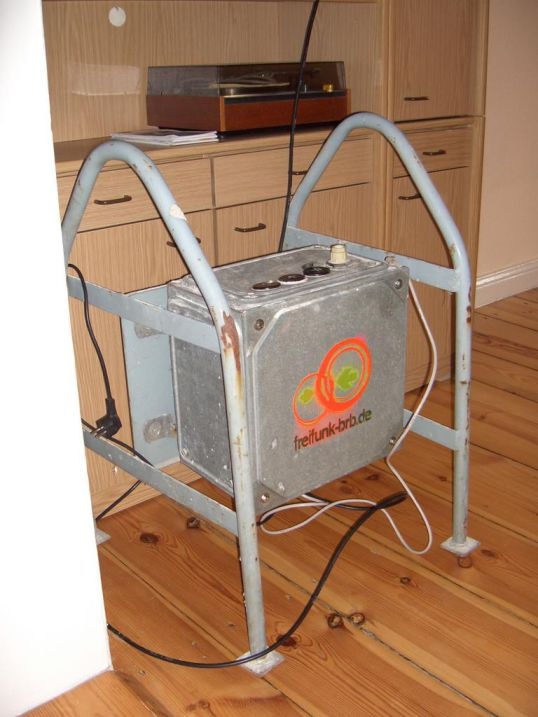
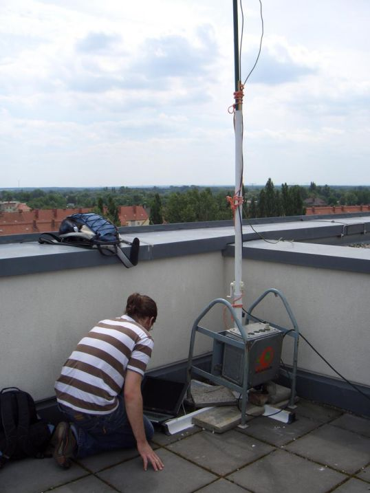
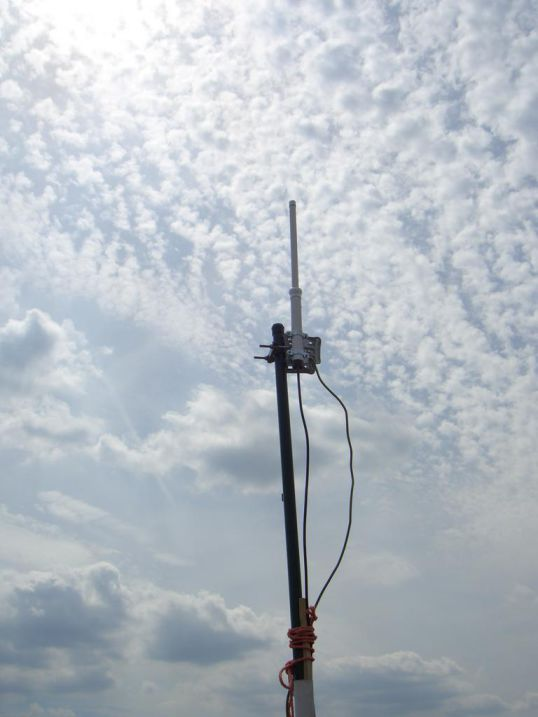

Ninux Verona
La community wireless di Verona
Realizzato da Ilario Gelmetti / ilario@eigenlab.org / Chimico e linuxaro.
All'interno di Roboval - 25 maggio 2014
Presso Verona FabLab
Cos'è Internet?
inter-net = reti (fisiche) interconnesse
Ciascuna rete si gestisce in modo autonomo
Costruiamo una rete. Ninux.
Ma facciamola a modo nostro.
Perché?
Motivazioni
- Sperimentare, smanettare, imparare, divertirsi
- Difendere attivamente la libertà di comunicare
- Scambio dati/streaming locale ad alta velocità
- Protezione civile (fare una rete che resista ai terremoti)
- Paranoia
- ...
Quali sono i problemi con internet?
Internet ha una struttura gerarchica, basta controllare pochi punti per controllarlo. tutto.  - Nulla dell'infrastruttura fisica di internet è nostro.
Digital divide
I provider seguono logiche commerciali
+
connettere un paesino in montagna non conviene
=
Digital Divide, il paesino in montagna o aspetta o si arrangia.
Censura

Giugno 2013
«I social media sono la peggior minaccia alla società»
Marzo 2014
Twitter e YouTube bloccati in Turchia (non molto lontano!).
Internet è un bene troppo prezioso perchè sia sotto il controllo di pochi.
Costruiamo dal basso una rete non gerarchica!

Le antenne
Antenne autocostruite

Le antenne
Antenne comprate router autocostruiti

Le antenne
Antenne comprate router autocostruiti
Le antenne
Antenne comprate router autocostruiti
Le antenne
Antenne comprate router autocostruiti
Le antenne
Router wireless da interni

Le antenne
Router wireless da esterni

Software usato
Usiamo il più possibile software open-source
(non ci fidiamo del software closed source).
Utilizzando il nuovo firmware Libre-Mesh (basato su OpenWrt) la nostra rete comunitaria (non solo wireless) potrebbe crescere anche fino alle dimensioni enormi di internet.
Routing dinamico
I dati seguono il percorso migliore modificandolo al volo per bypassare gli eventuali guasti.

Ed è legale?
Chi ha iniziato nel 2002 era nella completa illegalità.
Ora è legale fare telecomunicazioni sulle frequenze libere.
Più informazioni su http://wiki.ninux.org/LeggiWireless
Freifunk (Berlino) e Guifi (Catalogna) sono esempi vincenti di collaborazione con provider commerciali;
NinuxRoma scambia dati da pari a pari con Google e Fastweb.
E fa male?
- Emette un decimo della potenza di un cellulare,
- sta sul tetto di casa, non in tasca come il cellulare.
Se non vi fate problemi ad avere un cellulare,
non fatevi problemi ad avere una antenna di Ninux.
Internet ha cambiato la nostra vita
in modo definitivo.
Un bene così importante deve essere comune,
libero e facilmente accessibile.
Il modello proposto in questo documento è alla nostra portata.
Dobbiamo impegnarci ancora molto per realizzarlo.
Ma abbiamo tanti esempi di piccoli/grandi successi nel mondo.
Più informazioni su ninux.org e verona.ninux.org.
Abbiamo una mailing list per NinuxVerona su ml.ninux.org.